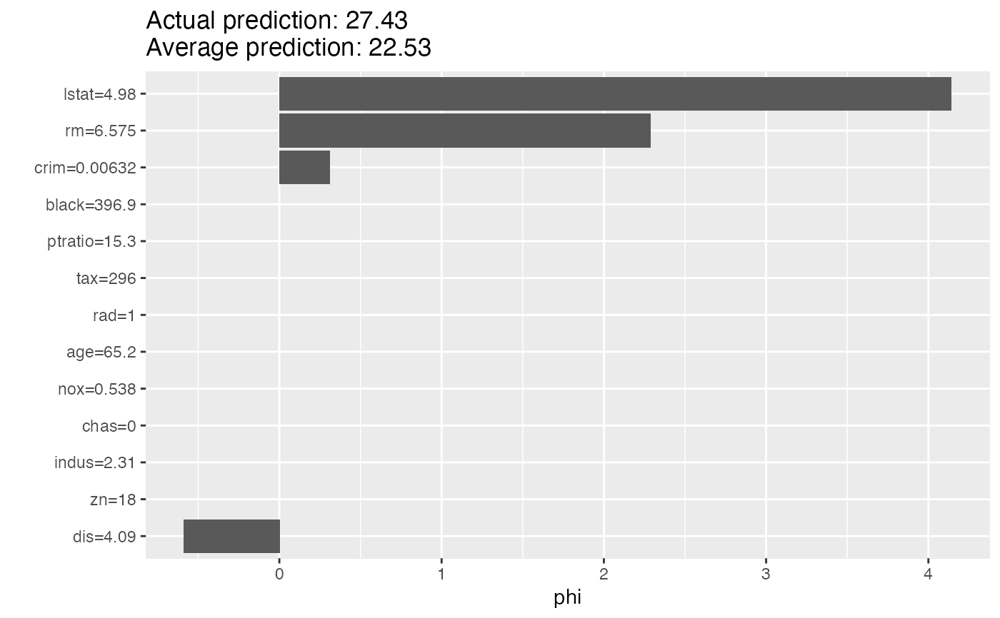
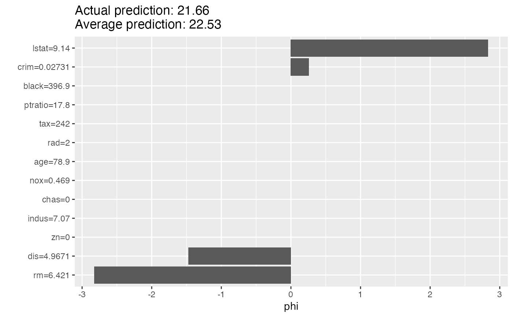

Shapley computes feature contributions for single predictions with the
Shapley value, an approach from cooperative game theory. The features values
of an instance cooperate to achieve the prediction. The Shapley value fairly
distributes the difference of the instance's prediction and the datasets
average prediction among the features.
For more details on the algorithm see https://christophm.github.io/interpretable-ml-book/shapley.html
Strumbelj, E., Kononenko, I. (2014). Explaining prediction models and individual predictions with feature contributions. Knowledge and Information Systems, 41(3), 647-665. https://doi.org/10.1007/s10115-013-0679-x
Shapley
A different way to explain predictions: LocalModel
iml::InterpretationMethod -> Shapley
x.interestdata.frame
Single row with the instance to be explained.
y.hat.interestnumeric
Predicted value for instance of interest.
y.hat.averagenumeric(1)
Average predicted value for data X.
sample.sizenumeric(1)
The number of times coalitions/marginals are
sampled from data X. The higher the more accurate the explanations
become.
Inherited methods
new()Create a Shapley object
Shapley$new(predictor, x.interest = NULL, sample.size = 100)
predictorPredictor
The object (created with Predictor$new()) holding the machine
learning model and the data.
x.interestdata.frame
Single row with the instance to be explained.
sample.sizenumeric(1)
The number of Monte Carlo samples for estimating the Shapley value.
data.frame
data.frame with the Shapley values (phi) per feature.
explain()Set a new data point which to explain.
Shapley$explain(x.interest)
x.interestdata.frame
Single row with the instance to be explained.
clone()The objects of this class are cloneable with this method.
Shapley$clone(deep = FALSE)
deepWhether to make a deep clone.
library("rpart") # First we fit a machine learning model on the Boston housing data data("Boston", package = "MASS") rf <- rpart(medv ~ ., data = Boston) X <- Boston[-which(names(Boston) == "medv")] mod <- Predictor$new(rf, data = X) # Then we explain the first instance of the dataset with the Shapley method: x.interest <- X[1, ] shapley <- Shapley$new(mod, x.interest = x.interest) shapley#> Interpretation method: Shapley #> Predicted value: 27.427273, Average prediction: 22.532806 (diff = 4.894466) #> #> Analysed predictor: #> Prediction task: unknown #> #> #> Analysed data: #> Sampling from data.frame with 506 rows and 13 columns. #> #> #> Head of results: #> feature phi phi.var feature.value #> 1 crim 0.3095547 1.516409 crim=0.00632 #> 2 zn 0.0000000 0.000000 zn=18 #> 3 indus 0.0000000 0.000000 indus=2.31 #> 4 chas 0.0000000 0.000000 chas=0 #> 5 nox 0.0000000 0.000000 nox=0.538 #> 6 rm 2.2868013 23.014323 rm=6.575# Look at the results in a table shapley$results#> feature phi phi.var feature.value #> 1 crim 0.3095547 1.516409 crim=0.00632 #> 2 zn 0.0000000 0.000000 zn=18 #> 3 indus 0.0000000 0.000000 indus=2.31 #> 4 chas 0.0000000 0.000000 chas=0 #> 5 nox 0.0000000 0.000000 nox=0.538 #> 6 rm 2.2868013 23.014323 rm=6.575 #> 7 age 0.0000000 0.000000 age=65.2 #> 8 dis -0.5863443 6.867283 dis=4.09 #> 9 rad 0.0000000 0.000000 rad=1 #> 10 tax 0.0000000 0.000000 tax=296 #> 11 ptratio 0.0000000 0.000000 ptratio=15.3 #> 12 black 0.0000000 0.000000 black=396.9 #> 13 lstat 4.1406006 38.654545 lstat=4.98if (FALSE) { # Shapley() also works with multiclass classification rf <- rpart(Species ~ ., data = iris) X <- iris[-which(names(iris) == "Species")] mod <- Predictor$new(rf, data = X, type = "prob") # Then we explain the first instance of the dataset with the Shapley() method: shapley <- Shapley$new(mod, x.interest = X[1, ]) shapley$results plot(shapley) # You can also focus on one class mod <- Predictor$new(rf, data = X, type = "prob", class = "setosa") shapley <- Shapley$new(mod, x.interest = X[1, ]) shapley$results plot(shapley) }